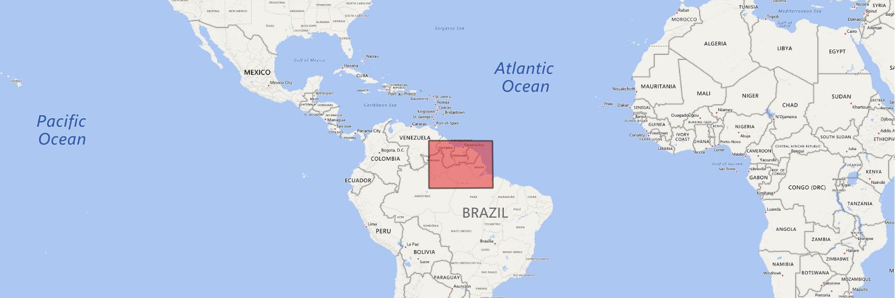
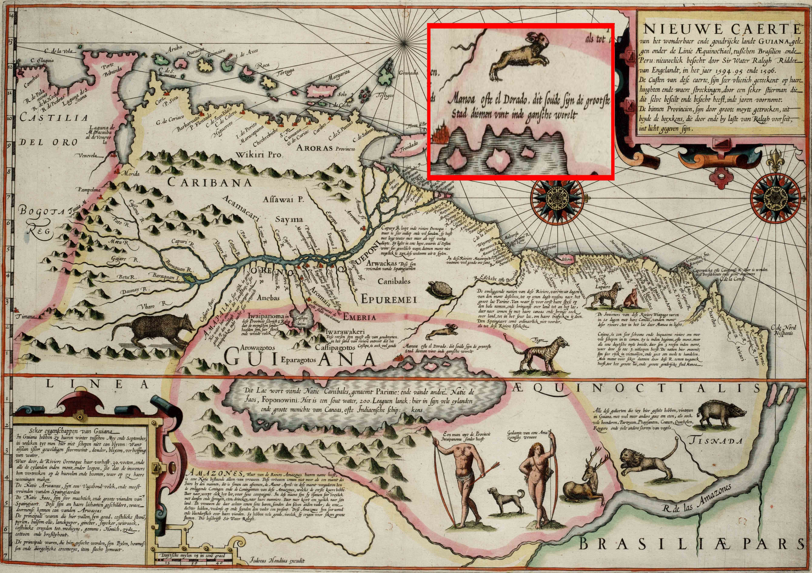
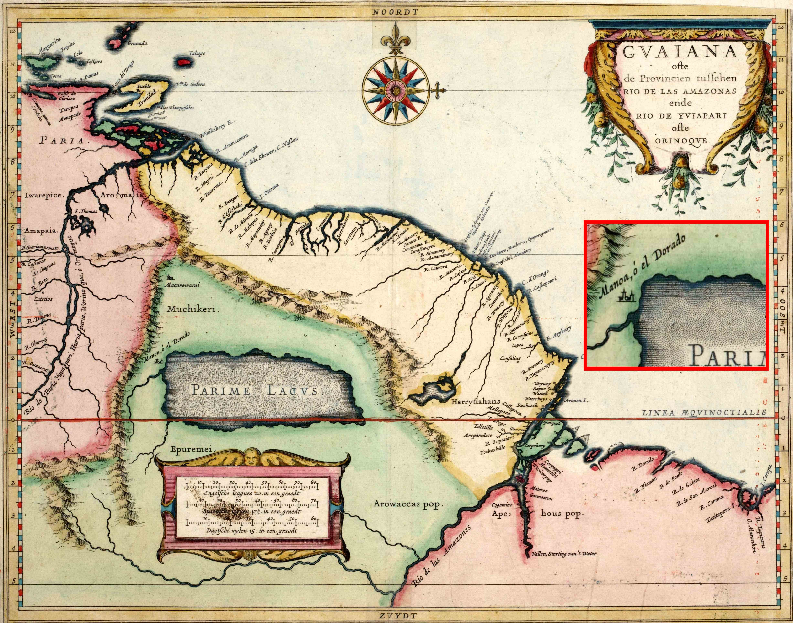
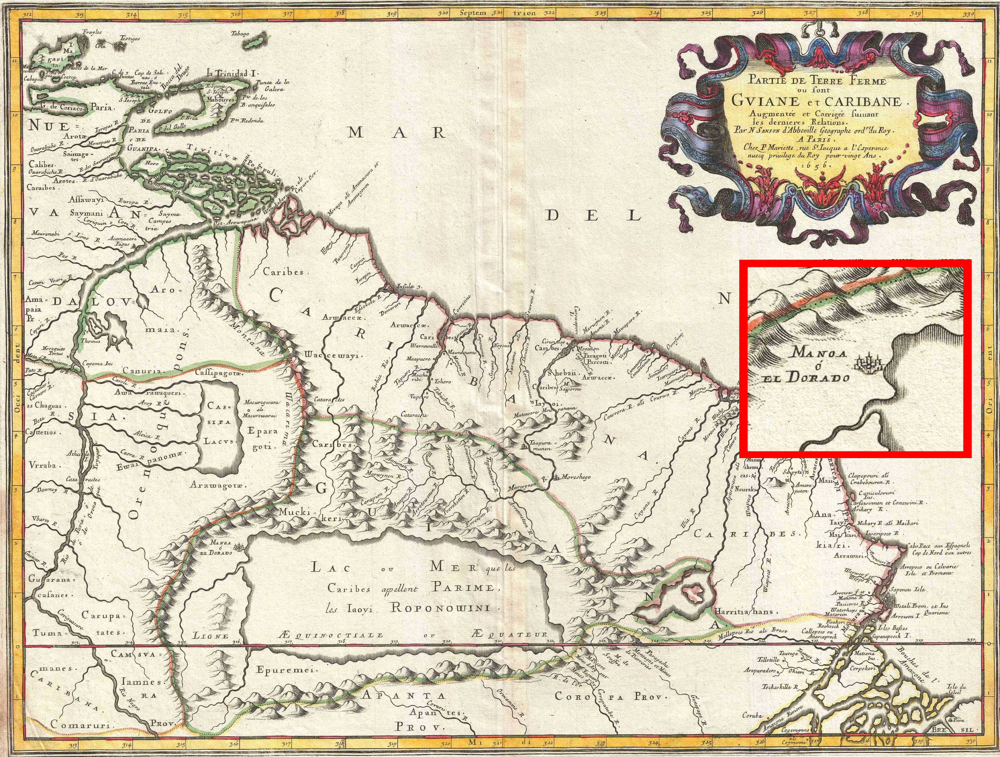

El Dorado is a name of a mythical place, either a city, a kingdom or an empire in the geographical area between today's Columbia and Guiana. The myth created by the Spanirads in the 16th century during the spanish conquest has its origins in the large amount of gold owned by the local population.
In 1595, the English explorer Sir Walter Raleigh set out to find the legendary city of El Dorado. Naturally, the city was never found but Raleigh wrote at length about his venture to South America, in which he claimed to have come within close proximity of "the great Golden Citie of Manoa" (which the Spaniards call El Dorado). Raleigh's narrative was quite unrealistic, for example describing a tribe of headless people. However, his reputation commanded such respect that other cartographers apparently used Raleigh's map as a model for their own, and the city remained on many maps of South America until as late as 1808 and spawned numerous unsuccessful ventures to locate the city
The Dutch cartographer Jodocus Hondius included El Dorado in his 1598 map of South America, as the city of Manoa on the northeastern shore of the legendary Lake Parime (exact location emphasized in red):
Lake Parime (Parime Lacus) on a map by the Dutch cartographer Hessel Gerritsz, 1625. Situated at the west coast of the lake, the so-called city of Manõa or El Dorado.
The French cartographer Nicholas Sanson's remarkable 1656 map of the northwestern parts of South America , Lake Parime, and the route to El Dorado:
Source: Wikipedia